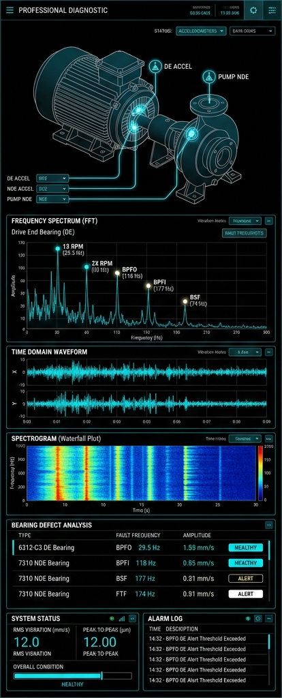

MechDiag AI
Machinery Condition Monitoring Diagnostic Agent
Parsa Rezaei
PhD in Nonlinear Dynamics & Vibration Systems
Kaggle 5-Day AI Agents Capstone Project 2026

Parsa Rezaei
PhD in Nonlinear Dynamics & Vibration Systems
Kaggle 5-Day AI Agents Capstone Project 2026
Diagnosing mechanical faults relies on scarce, specialized expertise. The current predictive maintenance paradigm faces critical bottlenecks:
A virtual Senior Vibration Analyst powered by a Large Language Model agent capable of strict diagnostic reasoning.
Multi-Modal Ingestion
Instantly parses raw vibration inputs alongside unstructured equipment manuals and thermal data.
Agentic Reasoning
Routes data through logic trees (ISO 13374, ISO 20816) and identifies missing measurements instead of guessing.
Unlike traditional dashboards that passively display data, MechDiag AI actively reasons through the logic tree to prevent operational downtime.
Fully Interactive Web Application
https://mechdiag-ai-gc4gzdgxqmbszjenykqvre.streamlit.app/
"Democratizing expert-level predictive maintenance to save global industries millions in downtime."